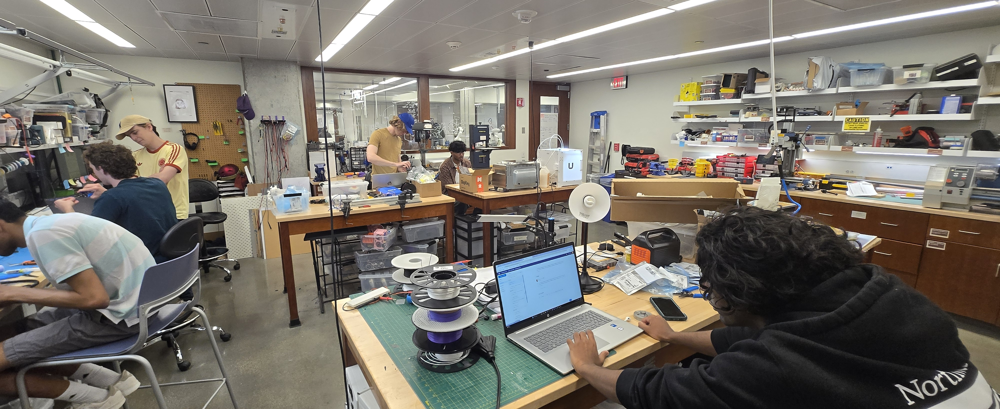

Makerspace:
Center for Robotics & Biosystems

Overview
I manage the CRB Makerspace at Northwestern University, the central hub of hands-on support and prototyping for the Center for Robotics and Biosystems. With over 35 PhD students and numerous other graduate researchers across labs led by faculty like Kevin Lynch, Brenna Argall, and Edward Colgate, the makerspace is a critical enabler of research progress. I am proud to be its lead — ensuring it remains safe, stocked, and continuously productive.
Design Philosophy & Impact
I believe the CRB Makerspace is more than a collection of tools — it's a rapid problem-solving environment where research ideas become real. I bring immense value by quickly diagnosing problems, identifying actionable next steps, and enabling researchers to test their ideas with minimal delay. I often help break down complex ideas into smaller, functional prototypes with key metrics and constraints in order to suggest streamlined fabrication and testing paths. I keep the space ready for action, with clear work surfaces, accessible tools, and well-organized supplies. I make myself available throughout the day and after hours, ensuring research never stalls for lack of support.
I play an active role in enabling research across the CRB. I support labs by designing test rigs, debugging custom PCBs, integrating sensors, or acting as a test subject when needed. I’m relied on for mechanical, electrical, and procedural advice. I’m known for being approachable, fast, and thorough — often juggling multiple inquiries and still delivering thoughtful, effective help.
Responsibilities
My responsibilities span four primary domains:
1. Inventory and Infrastructure
- Maintain stocked inventory of essential components: 3D printer filament, batteries, fasteners, motors, sensors, acrylic, bar stock, 80/20, dev boards, soldering supplies, and more.
- Manage infrastructure including soldering stations, electrical benches, power supplies, hand and power tools, and machine shop tools.
- Conduct regular maintenance and calibration of 3D printers (Prusa, Bambu, Creality, Ultimaker), ensuring reliable continuous operation for time-critical research projects.
2. Technical Support & Debugging
- Serve as the first point of contact for researchers encountering technical bottlenecks in their robotics projects.
- Support rapid iteration on mechanical design, fabrication, PCB assembly, firmware flashing, and experimental setup.
- Assist with selecting appropriate materials, sensors, actuators, and mechanical components for custom rigs and testbeds.
- Routinely help integrate sensing and control hardware, including setting up motion capture systems and feedback loops.
- Quickly design and build impromptu test stands, fixtures, and experiments without prior background knowledge or preparation.
3. PCB Assembly and Electronics Expertise
- Specialist in micro-soldering and surface-mount rework — considered the go-to person in the lab for fine-pitch electronics.
- Assemble and debug complex custom PCBs including sensor boards, power distribution systems, and motor controllers.
- Train others in efficient, high-reliability soldering and wire harness building.
- Utilize rapid prototyping methods to enable validation of surface mount components without need for breakout boards or custom PCBs.
4. Training & Lab Safety
- Provide orientation and hands-on training for researchers on tools like the mini mill, lathe, CNC, laser cutter, drill press, and more.
- Instruct best practices for electrical safety, mechanical fastening, ESD precautions, and proper tool use.
- Manage lab access through keycard control and hardware security (e.g., locking fuses and machine keys) to prevent unauthorized usage.
- Maintain a spotless safety record with zero injuries reported under my supervision.
Reflections
I truly believe I have the coolest office on campus. I’m surrounded by brilliant students, high-end equipment, and nonstop creativity. Helping researchers overcome technical challenges and keep their work progressing is one of the most rewarding parts of my role. It’s not just a job — it’s a front-row seat to the future of robotics.